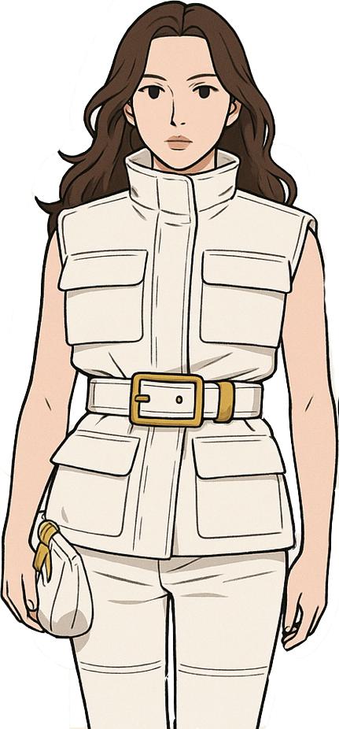
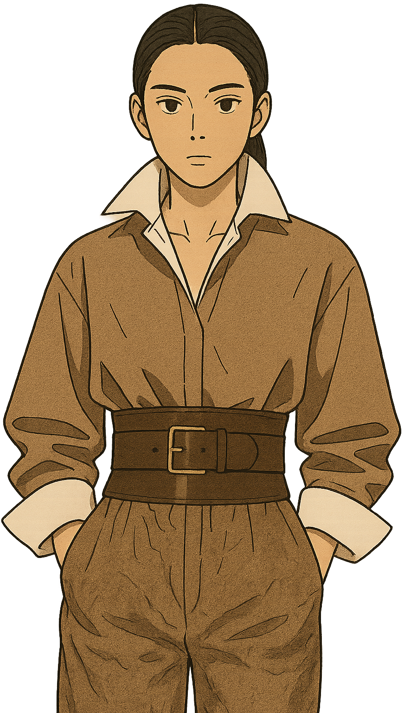

1
STATEMENT-MAKING
BELTS
루즈한 실루엣에 포인트를 주는 벨트가
필수 액세서리로 주목받습니다.
다양한 소재와 디자인의 벨트를 활용하여
아우터 위, 드레스, 니트 등
어떤 룩에도
스타일리시함을 더할 수 있습니다.
TIP
오버사이즈 아우터 위에
볼드한 벨트를 매치하거나,
심플한 원피스에 얇은 벨트를 착용하여
세련된 포인트를 줄 수 있습니다.